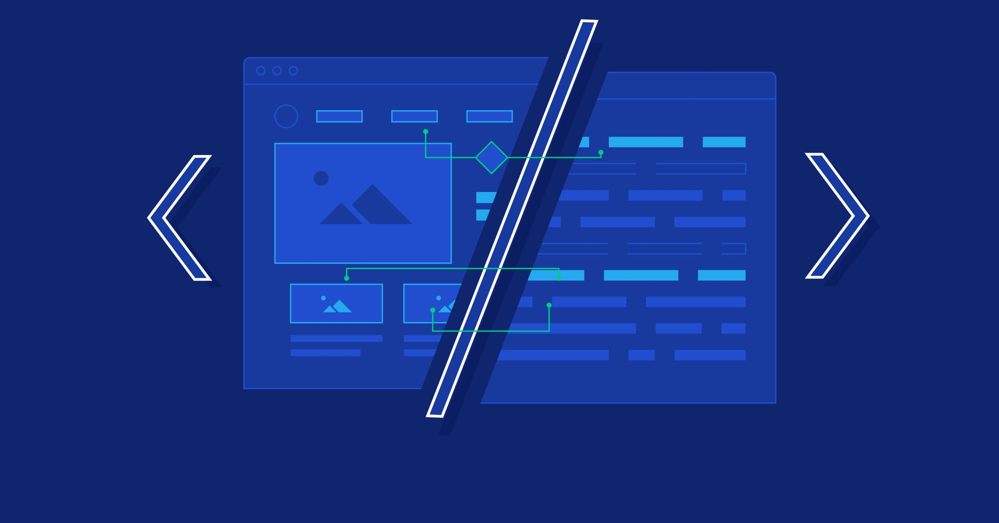

Why I Love Frontend Development
Posted on October 14, 2025
I love frontend development because it combines my interests in both technology and design. It allows me to create things that are not only functional but also visually appealing and enjoyable to use. As someone who currently serves as a Graphic Designer for WISH, I’ve developed a strong appreciation for good design and attention to detail, both of which carry over into my code. I’m excited to keep improving my frontend skills and continue building projects that reflect both my creativity and technical growth.